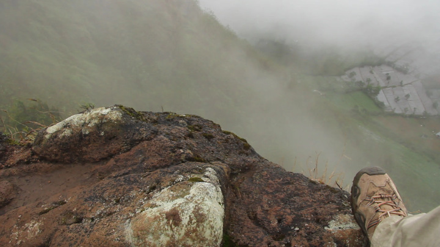
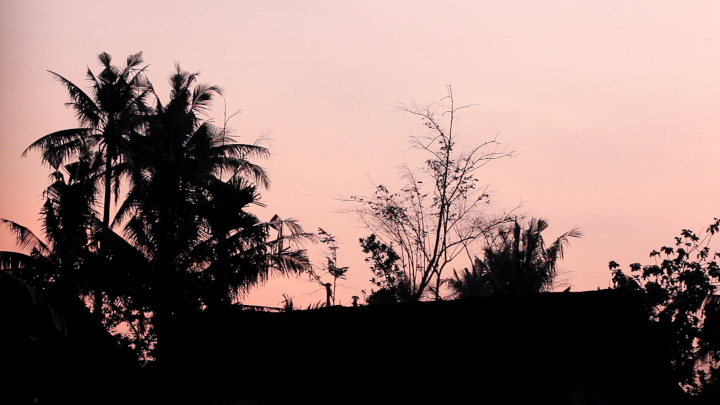

tag: sunrise

Looking Over a Cliff in the Dieng Mountains
02:03 (02:04 raw)
1080
Download

Morning in Naples
00:14
720
Download
The Sun Rises over a Black Sky
11:00 (07:50 raw)
1080
Download

Yogyakarta Sunrise, One
05:58 (05:56 raw)
1080
Download